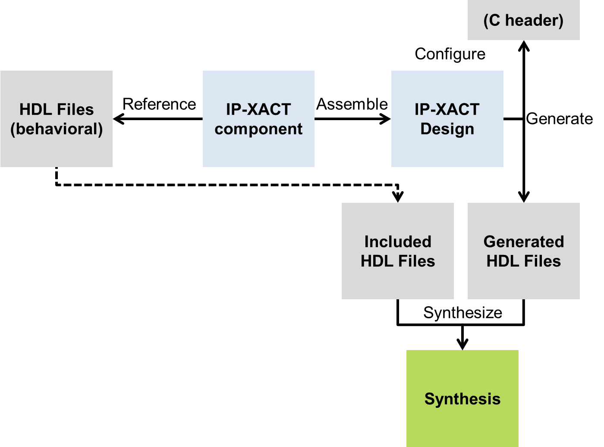
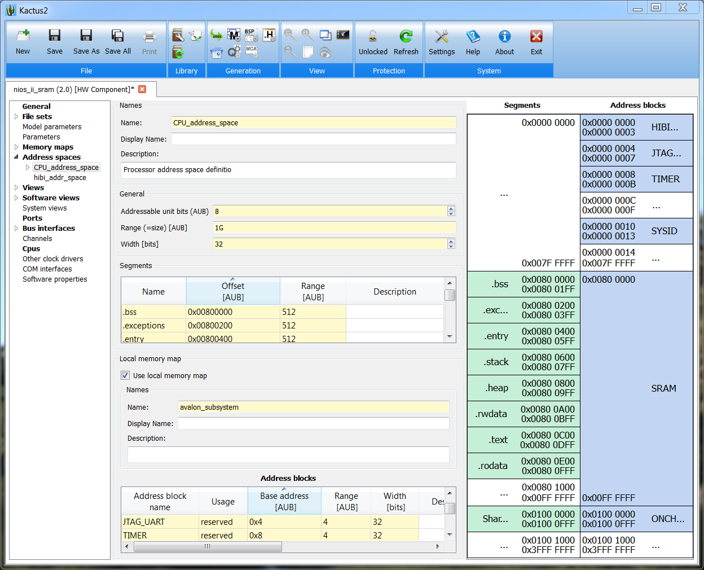

This is the home of Kactus2, the open source IP-XACT-based tool for ASIC, FPGA and embedded systems design. This and more are brought to you by Tampere University of Technology. Important: Kactus2 3.0 is the most thorough revision since the project started. With about 80% of the code lines touched we introduced big architectural changes and a lot of new features to support the new IEEE-1685-2014 IP-XACT standard. All of this gives better IP and Design configurability and adopts the familiar SystemVerilog format for parameters and expressions. We offer a conversion tool upon request for the old IP-XACT XML documents created by previous versions of Kactus2.
This is the home of Kactus2, the open source IP-XACT-based tool for ASIC, FPGA and embedded systems design. This and more are brought to you by Tampere University of Technology. Important: Kactus2 3.0 is the most thorough revision since the project started. With about 80% of the code lines touched we introduced big architectural changes and a lot of new features to support the new IEEE-1685-2014 IP-XACT standard. All of this gives better IP and Design configurability and adopts the familiar SystemVerilog format for parameters and expressions. We offer a conversion tool upon request for the old IP-XACT XML documents created by previous versions of Kactus2.
IP-XACT Basics
IP-XACT standardises the descriptions of IP-block and design as well as the design flow including integration and configuration information. The scope of IP-XACT covers the IP component library and HW design, and offers placeholders for settings, parameters, options and scripts needed in design automation. It does not specify any language to be used, but XML format to store the information. IP-XACT tools are used for editing and launching other tools for automated operation.
The IP-XACT Component is a central placeholder for all IP information. It defines the interface, parameters, registers/memory areas and some non-functional properties. All these apply to one or more Views that give the implementation of the IP by source code associated as FileSets. IP-XACT objects are referenced by a VLNV (Vendor,Library, Name,Version) identifier found in the XML file. For this reason the location of the IP-XACT XML file is not significant.
The IP-XACT Design is an assembly of IP-XACT component instances. The components are connected by Bus interfaces that use Bus Definitions. Each component may have parameters and default values, which can be overridden instance by instance.
IP-XACT supports infinite levels of hierarchy as depicted in the Figure below. A component is hierarchical when it includes a design, which includes instance(s) of other component(s). Any IP-XACT component should be independently re-usable at any level of design hierarchy, but it is still possible to propagate parameter values down in hierarchy.

IP-XACT helps describing many variations of the component. Parameters are used to define configurable things in many IP-XACT elements (the component itself). The component can have several implementations, each defined in Component Instantiations e.g. Verilog, VHDL and SystemC. Module parameters are implementation language specific parameters. Module and other parameters can refer to each other. A hierarchical component can have different designs defined in Design Instantiations or a design that has different configurations defined in Design Configuration Instantiations.
Views are collections of the Instantiations for some specific design purpose like high-level modeling, verification or releasing a product. We call them "mission configurations" to separate them from Instantiations that are "implementation configurations". A component can have all instantiation types, but Views tell what of them are used in each case.
IP-XACT designs can be configured in two principal ways: by different parameter values or by different Views for component instances. Each setup is stored in a Design Configuration, each of which refers to the same Design. Parameters can be propagated down in hierarchy as follows. The parameters and Module Parameters that are defined to be configurable in Component Instances are seen as Configurable Element Values (CEV) in the Design. The CEV can be set to a fixed value or to refer to other parameter e.g. at the upper hierarchy. Design Configurations are handy to define different sets of the CEVs
A simplified IP-XACT design flow is depicted in the Figure below. Generators produce top-level HDL code for synthesis and project files for collecting included HDL code from the components. Generators are often used to create HW dependent SW code, e.g. header files for the registers.

Kactus2 scope on IP-XACT
Kactus2 includes tools for all essential parts of the IP-XACT design flow. Import wizards are used to create IP-XACT models from legacy VHDL and Verilog code, and generators are used to create source code for simulation, synthesis and SW development.
Legacy HDL code import to IP-XACT (VHDL, Verilog)
Kactus2 import wizard searches for the VHDL entity and extracts the ports. Parameters are extracted from the generics, and constants found in packages. Kactus2 writes this information to the IP-XACT component XML file. The source files are referenced by the path and name in the XML file.
HDL code generation from IP-XACT (VHDL, Verilog)
Kactus2 VHDL generator creates the top entity for the IP-XACT Design that instantiates the component entities. The Component entities can also be (re)generated from the IP-XACT Component, especially if there is only the IP-XACT description without any imported HDL files.
Kactus2
Kactus2 guides towards faultless IP and design data exchange
Kactus2 offers best of class usability that helps communication between HW and SW designers, customers and subcontractors and between managers and developers. Graphical designs views help explain the product architecture and contribute to requirements. Kactus2 allows combination of drafted and fully specified IPs at the same design. All have the freedom to propose new blocks and try out different alternatives, while all data is formalized and manual copying of data eliminated.
Kactus2 can be fitted to current design flows. Basically there's no need to change code development, synthesis, verification or other critical tools, but the way of configurations might need changes. Import wizards help creating IP -XACT models from existing VHDL and Verilog IPs. Generators produce synthesisable code for the RTL flow.
You don't lock-in with Kactus2, because you own data and can freely access it at any time. Kactus2 is based on IEEE1685/IP-XACT metadata with our free and open extensions. Kactus2 comes with a core for managing components and designs plus plugins for automation.
To whom
Small and mid-size vendor and integrator companies that now have only the traditional toolset: office tools (doc, xls, ppt) for specification/documentation and Verilog/VHDL, C/C++, FPGA tools for designs. Kactus2 helps taking a step to metadata based design that keeps products much better manageable while still using also the familiar tools.
Universities and research laboratories that implement new content (IP bocks, SW modules). Kactus2 helps packetizing the content in a standard way for (re)using it much easier by others, specifically when the original contributor leave after e.g. a PhD project.
Bigger companies and tool providers that already have modern design tool flows and resources for developing higher abstraction methods. Kactus2 offers a great R&D environment for trying new methodology ideas and user interface innovations.
What you can do with Kactus2

Draft & Specify from scratch
- Quickly draft block diagram blueprints for product boards (PCB), chips, system-on-chip, IPs and get them stored in IP-XACT format
- Draft communication channel abstraction endpoint design for all processors and fixed IPs in a product
- For new IP-blocks generate code templates (VHDL entities, headers) from IP-XACT components defined in Kactus2
Packetize IP for reuse and exchange
- Create "electronic datasheets" of your existing IPs for library as templates and blocks ready for integration
- Import, export and integrity check IP libraries from any standard compatible IP vendor
- Analyze file dependencies between IP's source files and easily see changes in any file
Create MP-SoC products
- Create HW designs with hierarchy across PCB, Chip, SoC, IP-blocks
- Define memory areas and registers for the components

- Configure base addresses
- Create system designs that map SW to HW
- Create SW architecture with communication abstraction as channels (MCAPI, Socket and others)
- Configure all designs
- Generate everything ready for HDL synthesis and SW build for all processors
What you can't do with Kactus2
- Create IP functionality. You should use HDL editors and SW IDEs. Kactus2 can create stub code for interfaces. For HW components you may use e.g. TCE-tools to create "C to VHDL" so you can create the copmponent source without knowing much of HDLs.
- Generate binaries/executables. You should use HDL synthesis and SW compilation tools, but there is clear path from Kactus2 to other tools. IP-XACT generators are the standard way to build automation between tools.
- Press money. But you save a lot of time and effort.
What is Metadata?
Kactus2 follows the general platform based design paradigm with extensive use of metadata. Product is created by assembling application components on platforms, and all are packetized to a library with metadata. Metadata makes sure unambiguous interoperability between partners and tools and makes design automation possible.
Metadata for a component is formal, vendor and technology independent description of the component. It includes references to source files and other related information. Components are in practice HW blocks and SW codes in different abstraction and granularity levels.
Metadata for a design is a formal structural description. It includes references to component metadata, tools, configurations and other design related information.
In brief, metadata is like an electronic datasheet + product + project documentation.Read more on our white paper or presentation on MeCoES'12 workshop.
What is metadata based design flow?
First, components are encapsulated and separated from their source, e.g. HDL source code is embedded via links to the source file in the metadata file. IP metadata is used to assemble compopnents in a design. IPs as well as the design itself may have generic parameters, which are configured using generators that are typically scripts. The final configured design can be seen as "instructions" on how to create the final executables.
Metadata benefits
- Metadata-based design flow makes selling, buying, integrating and reusing IPs and complete designs much less error prone
- Saves time and effort when managing several configurations and variants of the products
- Machine readable documentation also for the tools, languages and environments for backup and maintenance
- Increased design automation and standard compatibility
Kactus2 extensions to IP-XACT
- Implementation
- We handle also SW components as IP-XACT objects. This allows building dependencies and reusing SW easier. IP-XACT parameters and vendor extensions are utilized.
- Firmness
- We add attributes to help managing the design process from re-usable components and designs to fixed product releases. IP-XACT parameters and vendor extensions are utilized.
- Product hierarchy
- Embedded system products consists of HW and SW design data
and plenty of process and other auxiliary information. We consider the
product as a hierarchy of its physical realization. Environments refer
to the context in which products are specified, verified, tested and
finally used. Each product level include associated information like
documentation, source codes, tools, configurations and production data.
Our product hierarchy model consists of boards containing chips that are fixed-function or they can accommodate a system-on-chip (SoC), which are built up from IP-blocks. All levels include both HW and SW related information.
The scope of IEEE1685/IP-XACT is on the IP and SoC levels, but we apply the standard also to other levels, aiming at product level information management (PDM, product data management).
Roadmap and Kactus2 releases
See the completed and planned releases at Kactus2 issue tracker and frequently updated code statistics at Openhub
Summary of past milestones
Examples
Example designs
Multicore Association MCAPI implementation and demo for PC and ARM
A demo includes VirtualBox Lubuntu image (1.2GB) including the following:
- POSIX-based MCAPI implementation PMQ-MCAPI
- Demo projects for PC and Altera Cyclone V FPGA-SoC ARM ready to launch
- Linux build for ARM
- Kactus2 libraries for the demos
- Kactus2, compilers etc. to get it up and running with zero configuration
Read instructions,documentation and get PMQ-MCAPI open source code.
Download imageAlternatively you may download only Kactus2 library (3.1MB) containing the demo projects.
Download Kactus2 libraryQuick guide to open Kactus2 library
- Download MCAPI demo Kactus2 library and unzip it to a working folder
- Download Kactus2 and install it
- Open Kactus2 -> Configure library -> Add the path to the working library where you unzipped the MCAPI Kactus2 library package
- Browse the project on left. You may open the System design that shows MCAPI channels designed in Kactus2
Kactus2 Publications
- Esko Pekkarinen, Mikko Teuho, Erno Salminen, Timo D. Hämäläinen, Resolving parameter reference management in IP-XACT using Kactus2, IECON'2015 41st Annual Conference of the IEEE Industrial Electronics Society, Nov 9–12, 2015, Yokohama, Japan, 6 pages.
- Mikko Teuho, Esko Pekkarinen, Timo D. Hämäläinen, Semantics analyzing expression editors in IP-XACT design tool Kactus2, Proceedings of the 14th Symposium on Programming Languages and Software Tools, Oct 9-10, 2015, Tampere, Finland, p. 106-118.
- Erno Salminen, Timo D. Hämäläinen, Gamification of System-on-Chip design, International Symposium on System-on-Chip, Tampere, Finland, Oct 28-29, 2014, 8 pages.
- Antti Kamppi, Lauri Matilainen, Joni-Matti Määttä, Erno Salminen, Timo D. Hämäläinen, Extending IP-XACT to embedded system HW/SW integration, International Symposium on System-on-Chip, Tampere, Finland, Oct 23-24, 2013, 6 pages.
- Joni-Matti Määttä, Mikko Honkonen, Tommi Korhonen, Erno Salminen, Timo D. Hämäläinen, Dependency Analysis and Visualization Tool for Kactus2 IP-XACT Design Framework , International Symposium on System-on-Chip, Tampere, Finland, Oct 23-24, 2013, 6 pages.
- Lauri Matilainen, Sakari Lahti, Otto Esko, Erno Salminen, Timo D. Hämäläinen, Integration of TTA processor tools to Kactus2 IP-XACT design flow, Norchip, Copenhagen, Denmark, Nov 2012, 6 pages.
- Antti Kamppi, Joni-Matti Määttä, Lauri Matilainen, Erno Salminen, Timo D. Hämäläinen, Kactus2: Extended IP-XACT metadata based embedded system design environment , Embedded Systems Week / MeCoES: Metamodeling and Code Generation for Embedded Systems workshop, Oct 7, 2012, 6 pages.
- Lauri Matilainen, Erno Salminen, Timo D. Hämäläinen, MCAPI abstraction on FPGA based SoC design, FPGA World 2012, Oct 5, 2012, Tampere, Finland, 6 pages.
- Lauri Matilainen, Lasse Lehtonen, Joni-Matti Määttä, Erno Salminen, Timo D. Hämäläinen, System-on-Chip deployment with MCAPI abstraction and IP-XACT metadata, International Conference on Embedded Computer Systems: Architectures, Modeling, and Simulation (SAMOS XI), Samos, Greece, July 2012, 8 pages
- Erno Salminen, Timo D. Hämäläinen, Marko Hännikäinen, "Applying IP-XACT for product data management", International Symposium on System-on-Chip, Tampere, Finland, Oct 31 - Nov 2, 2011, pp. 86-91.
- Antti Kamppi, Lauri Matilainen, Joni-Matti Määttä, Erno Salminen, Timo D. Hämäläinen, Marko Hännikäinen, "Kactus2: Environment for Embedded Product Development Using IP-XACT and MCAPI", The 14th Euromicro Conference on Digital System Design (DSD), Oulu, Finland, Aug 31 - Sep 2, 2011, pp. 262-265.
- Lauri Matilainen, Erno Salminen, Timo D. Hämäläinen, Marko Hännikäinen, "Multicore Communications API (MCAPI) implementation on an FPGA multiprocessor", International Conference on Embedded Computer Systems: Architectures, Modeling, and Simulation (SAMOS XI), Samos, Greece, July 18-21, 2011, pp. 286 - 293.
Tutorials
An introduction to IP-XACT and Kactus2 presentation at ORCONF2015, Oct 9-11 at CERN
Learn about VLNV and Kactus2 library
Kactus2 keyboard shortcuts
- ctrl-{z,x,c,v,a}
- Usual shortcuts for editing
- ctrl-space
- Lock/unlock
- ctrl-tab, ctrl-shift-tab
- Move left/right of the design view tabs
- alt-LeftMouseButton
- When dragging from library, drop to replace the component in design. When dragging within design, switch dropped component
- F2
- Open (table cell) for editing
Kactus2 Video tutorials
Tutorial on exporting pin definitions from QuartusII to Kactus2,
creating IP-XACT bus interfaces and port maps and generating from
Kactus2 the PADS Logic decals for PCB design
Getting started for the first time with existing libraries
- Basics of docking windows and customizing workspaces
- Adding new libraries
- Filtering library items and browsing either VLNV name based or product hierarchy that is based on VLNV references from top down
A use case how to specify a new IP-XACT metadata component in Kactus2 for a new hardware IP-block (non-existing)
- Create Port definitions
- Create Model Parameters (for VHDL generics)
- Define local Memory areas and registers for this component (IP-XACT Memory Map Definition)
- Create bus interfaces and port maps, this is skipped in the demo
- Generate VHDL stub for the IP-block implementation
A use case how to create IP-XACT HW-Design and generate from it C header, Altera Quartus project and Top VHDL
- Add new IP-block to existing design
- Set base addresses in HW design
- Generate top-level VHDL
- Generate Quartus II project
- Generate C header files
Disclaimer
All the information and any part thereof provided on this
website are provided « AS IS » without warranty of any kind either
expressed or implied including, without limitation, warranties of
merchantability, fitness for a particular purpose or non infringement of
intellectual property rights.
TUT makes no representations or
warranties as to the accuracy or completeness of any materials and
information incorporated thereto and contained on this website. TUT
makes no representations or warranties that access to this website will
be uninterrupted or error-free, that this website (the materials and/or
any information incorporated thereto) will be secure and free of virus
or other harmful components.
Contact us
We welcome any feedback from the tools and suggestions to new features. Further directions are:About us
We are a research group in the Department of Pervasive Computing at Tampere University of Technology. We are rooted in hardware, from parallel processor boards to System-on-Chip architectures. Aligned to that we have a strong track record on design methodologies and tools development, as well as video encoders as a major application domain
Today we focus on improving the productivity of SoC and embedded system design. The means are language and tool agnostic metadata to support re-use and optimization of the design workflow. New ideas are brought into life in our tools that have superior usability as the first requirement.
We work on close collaboration with companies to get requirements for the research and feedback on our solutions. Please contact us if you are interested in a joint project.
The Team
Current members (Updated Apr 1 2016) are
Prof. Timo D. Hämäläinen,
Dr. Jarno Vanne,
Esko Pekkarinen, Sakari Lahti, Janne Virtanen, Panu Sjövall, Arto Oinonen.
Alumni are Dr. Erno Salminen,
Dr. Kimmo Kuusilinna, Dr. Pasi Kolinummi, Dr. Tero Kangas, Dr. Panu
Hämäläinen, Dr. Vesa Lahtinen, Dr. Ari Kulmala, Dr. Tero Arpinen, Dr.
Petri Kukkala, Dr. Marko Hännikäinen, Lauri Matilainen, Mikko Honkonen,
Timo Korpela, Joni-Matti Määttä, Antti Kamppi, Juha Arvio, Juuso
Järvinen, Jussi Nieminen, Tapio Koskinen, Mikko Setälä, Kalle Holma,
Timo Alho, Antti Rasmus, Janne Muhonen, Pasi Liimatainen, Ville-Veikko
Jokinen, Marjo Kari, Pasi Pulkkinen, Kimmo Tikkanen, Eero Ryytty, Antti
Jore, Aki Launiainen, Timo Kaikumaa, Juha Särkijärvi, Miia Viitanen,
Kaisa Haapala, Tomi Sokeila.